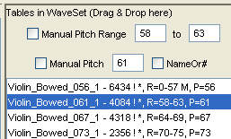
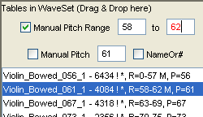
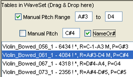

|
Mobileer Instrument Editor
CONFIDENTIAL and PROPRIETARY - © 2002-6 Mobileer Inc.
|
Mobileer Instrument Editor
Manually Editing the Keyboard Zone
The Mobileer Synthesizer uses multiple WaveTables when creating the sound of a single instrument. The WaveTable is chosen on the basis of the desired pitch. Each WaveTable is assigned to a range of pitches. These ranges are calculated automatically from the pitch of the wavetable.
- In figure 1 we can see that the pitch of the second WaveTable is 61. The next WaveTable has a pitch of 67. The editor automatically chose a range of 58 to 63 for the WaveTable at 61 and a range of 64 to 69 for the next wavetable at 67.

- We can override the pitch range by entering a new value. If we type 62 into the box that says 63 and hit Enter then we will see the following.

- Note that the "Manual Pitch Range" Checkbox was automatically checked. If you uncheck it then it will go back to automatically calculating the optimal range.
- You can also override the pitch setting from the WaveTable editor by entering a new pitch. This is particularly if you want the pitch of the WaveTable to be different when it it used in different WaveSets.
- You can enter pitches either by number or by name. Pitch names are the letter followed by the octave, for example "D4". You can specify a sharp using "#" or "S". If you want the system to display names instead of numbers then check the "NameOr#" box.

| Top | Previous | Next |